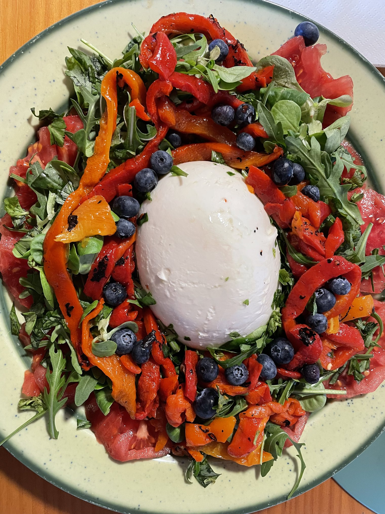

Ensalada de rúcula, pimientos, tomate, burrata y arándanos
Ingredientes
2×
- 2 tomates
- 2 puñados de rúcula
- 1 bote de pimientos rojos asados
- 1 puñado de arándanos
- 1 burrata
- aceite de oliva
- sal
- pimienta

Preparación
Paso 1
Cortar 2 tomates en rodajas y ponerlos en la base de un plato grande. Cubrir con 2 puñados de rúcula.
Paso 2
Repartir por encima 1 bote de pimientos rojos asados en tiras y 1 puñado de arándanos.
Paso 3
Poner 1 burrata en el centro y aliñar con aceite de oliva, sal y pimienta.
Resumen
2 tomates
2 puñados de rúcula
Cortar
1 bote de pimientos rojos asados
1 puñado de arándanos
Repartir
1 burrata
aceite de oliva
sal
pimienta
aliñar